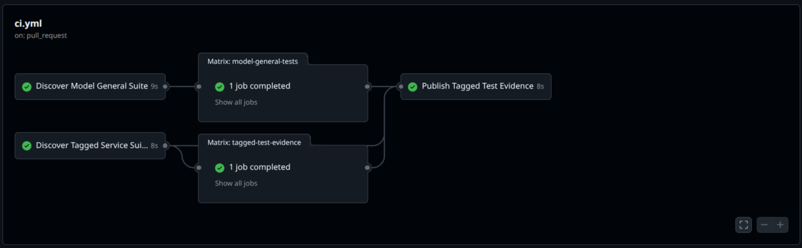
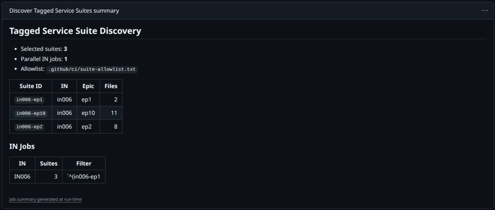
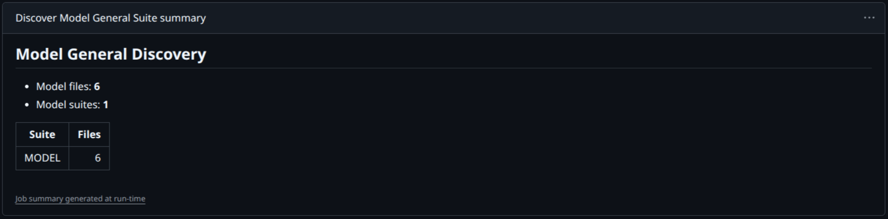
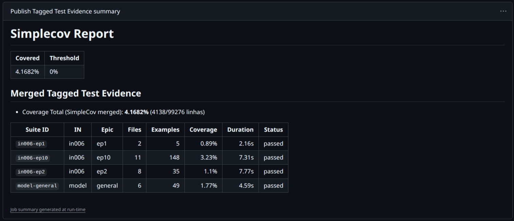

Artigo
Processo pratico para sair de brownfield com confianca: entrada story-first, ciclo TD -> TA -> RV -> TR e rastreabilidade sem loop.
Objetivo: comentar a notícia e refletir sobre impacto prático no uso de IA no dia a dia.
Quem for só um vai ficar de fora
No fluxo atual da equipe, escolha entre CT e CST. Se houver duvida, va de CST.
Siglas: TD = Test Design, TA = Test Automation, RV = Review, TR = Trace.
Aplicacao rapida: TD define riscos e cenarios, TA implementa cobertura, RV valida qualidade da suite e TR fecha rastreabilidade com gate final.
Resultado por etapa: sempre done ou blocked. Proibido abrir micro-etapa residual da mesma fase.
Use '$brownfield-to-tea' com cenario, alvo, objetivo, evidencias e checkpoint antes do TD.
Depois do TR, sincronize os globais apenas uma vez e so apos confirmacao explicita do usuario.




Fluxo: tags -> suite_id -> allowlist -> execucao paralela -> consolidacao final de cobertura.
Velocidade real em brownfield vem de reduzir retrabalho: cenario correto, story certa, anti-loop por etapa e sincronizacao global no momento certo.